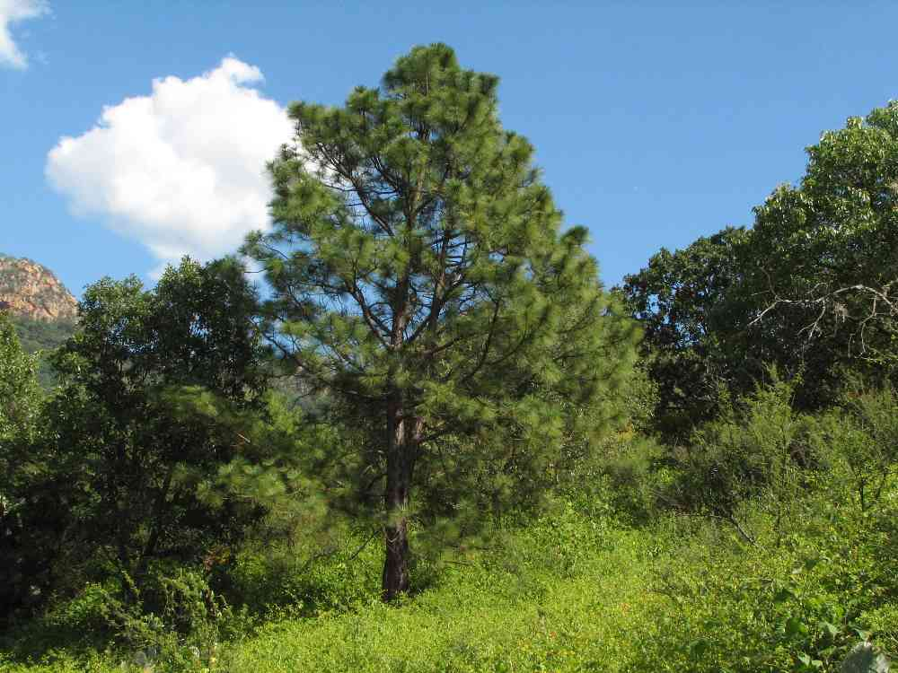
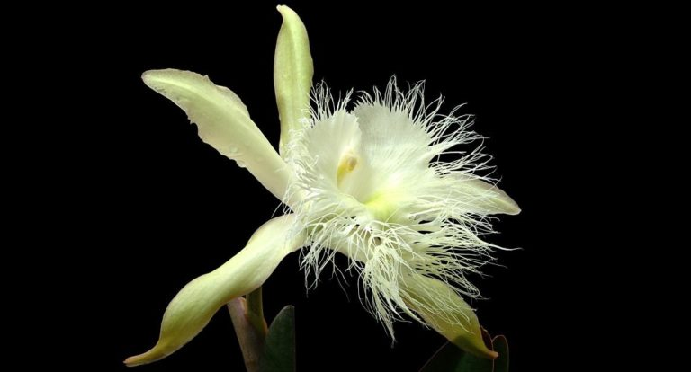
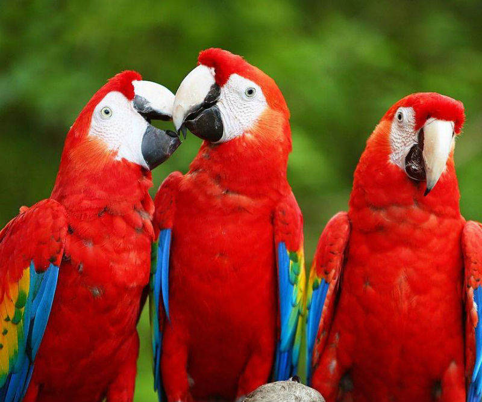

Simbolos Patrios
Bandera y Escudo

La bandera consta de tres franjas horizontales del mismo tamaño, de color azul turquesa las exteriores y blanca la central. En el centro, dentro de la franja blanca, figuran cinco estrellas azules turquesa que simbolizan a los cinco países que formaron la antigua federación centroamericana y el ideal de la unión de Centroamérica. Las franjas azules simbolizan el cielo hondureño, los generosos ideales y el amor fraternal que los une al igual que la justicia, la lealtad, la fraternidad, la fortaleza, la dulzura, el valor, el océano Atlántico y el océano Pacífico que bañan las costas del este y el oeste del país, respectivamente, al igual que las de Centroamérica. La franja blanca simboliza la meta a donde deben dirigirse las buenas acciones del patriotismo nacional, la pureza, la integridad, la fe, la obediencia, la paz, la firmeza, la vigilancia, la bondad y la nación.
Arbol Nacional
El pino Amarillo, pino avellano es un árbol nativo del Nuevo Mundo. El Pino fue elegido por el gobierno del entonces presidente Miguel Paz Barahona, quién mediante acuerdo No. 429 emitido el 14 de mayo de 1928 resolvió declarar el Pino como Árbol Nacional de Honduras. Su elección como representante de la flora nacional esta basada en el hecho que el Pino es el árbol que de manera natural predomina en los bosques hondureños. Es un árbol que alcanza un tamaño de 15 a 25 m de altura, con el tronco grueso y la corteza gris o café-rojiza. Las hojas son de color verde olivo o verde pasto, y miden de 12 a 30 cm de largo. Tiene conos solitarios o en dos que se abren al madurar como rosas y son café amarillento con brillo o café rojizo.Sus hojas crecen en grupos de 3 a 5, miden de 11 a 30 cm, son rectas, rígidas o a veces laxas, la base de la hoja envuelta en una vaina de hasta 2.5 cm de largo.
Flor Nacional
La flor nacional es Rhyncholaelia digbyana var. fimbripetala y se considera endémica a Honduras. La orquídea de la virgen es una planta epífita, es decir, crece sobre árboles y posee llamativos pétalos blancos que se complementan con el tamaño y fragancia de la flor. Se encuentra en bosques mixtos de pino-encino en elevaciones de 800 msnm, florece entre mayo-agosto y sus flores duran alrededor de una semana. Produce abundantes semillas y es de fácil cultivo, convirtiéndola en una buena candidata para aplicar el cultivo de tejidos como una estrategia de conservación de la especie ya que las poblaciones silvestres se han reducido considerablemente, en particular por la destrucción de su hábitat, uno de los principales problemas que enfrenta la flora del país. Puede compartirlo por medio de:
Ave Nacional
La Guara Roja o Guacamaya Roja es nativa de Honduras, principalmente de La Mosquitia y gracias a un proyecto de conservación se le puede encontrar volando libremente en el parque arqueológico de Copán Ruinas, ahora declarado Valle Sagrado de la Guacamaya Roja. Su hábitat se extiende desde el sureste de México hasta las selvas de Cochabamba en Bolivia, prefiere los bosques tropicales húmedos cerca de abundantes fuentes de agua. En Honduras existen dos especies de Guacamayas: la Guara Roja (Ara Macao) y la Guara Verde (Ara Ambigüa), y recientemente se han introducido otras especies. Es popular como ave doméstica por su comportamiento sociable y porque aprende a imitar palabras. Fue venerada por las civilizaciones Mayas, Aztecas y hasta el imperio Inca en Perú, por la belleza de su plumaje.